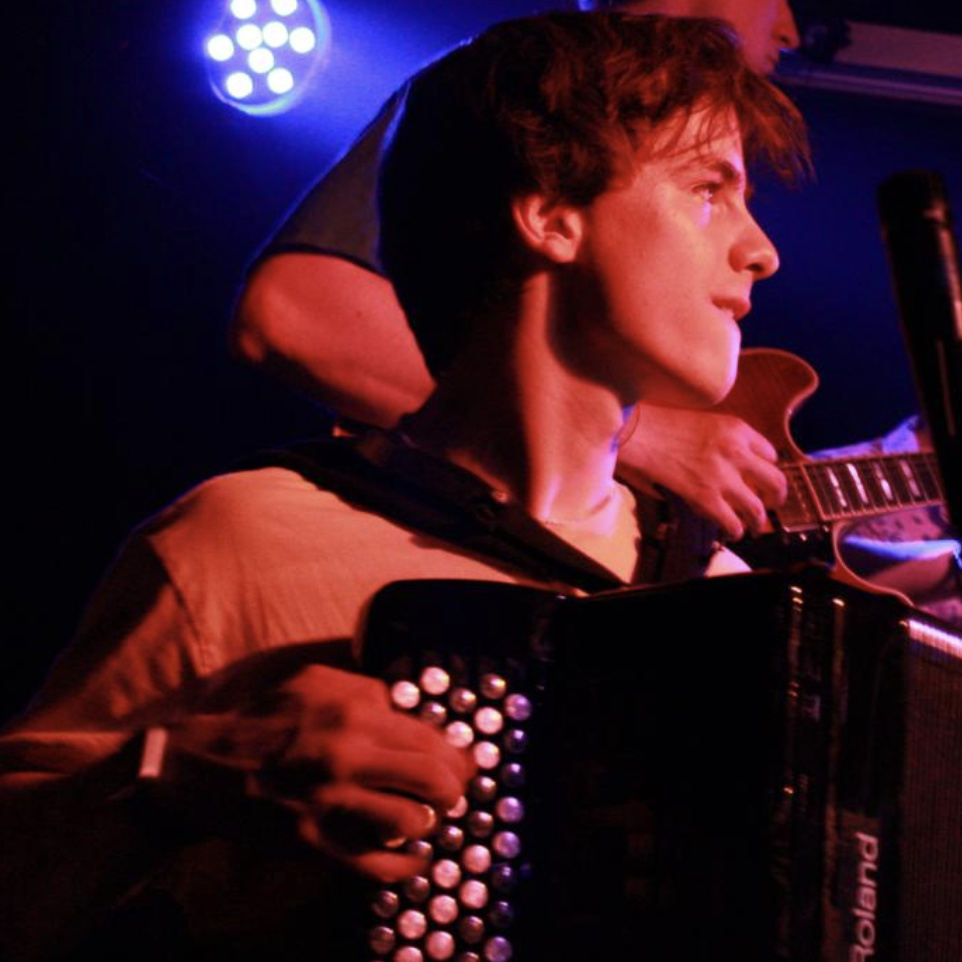
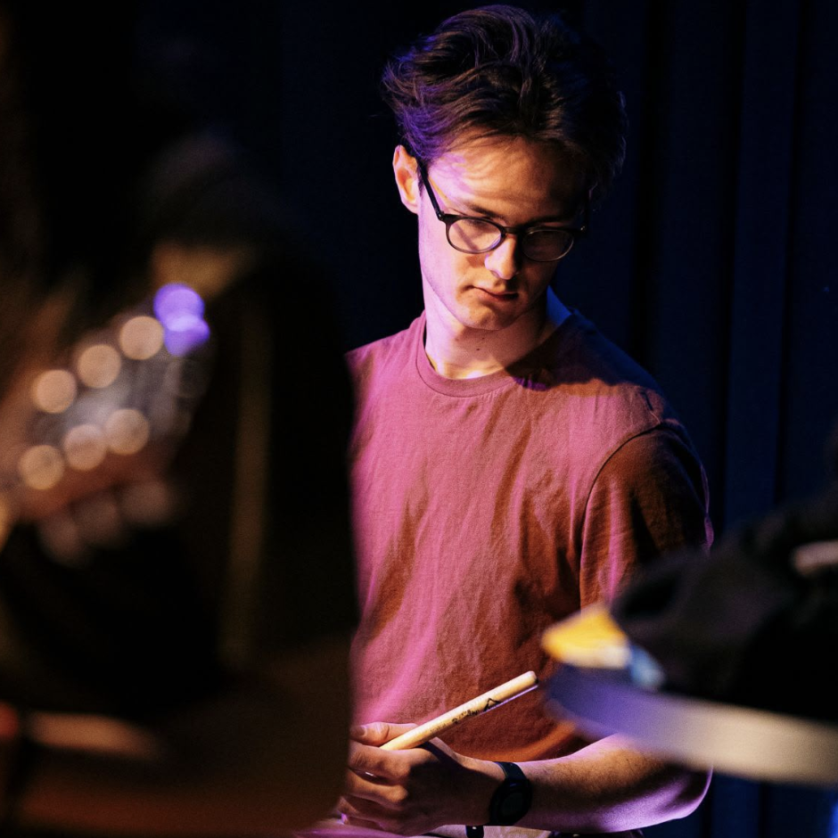

The Musicians

Nathan Zürcher thinks the accordion is cool... but this was not the case in the moment that he considered giving up on his instrument to play the bass or to become a shoe-shiner. Yet his discovery of jazz and of the electric accordion resurrected the flame of his musicianship. He decided to sacrifice everything: his ego, his shoe polish and his dreams of riches, in order to join a jazz school in which he came to know the ultimate, the unique, the grandiose Django Shaw, who himself was also intrigued by electronic music and by love. It was with great pleasure that Nathan joined Django's band, convinced that Jubjep would give rise to a golden age of music and would be engraved in the annals of music history.

Josh Bigler was introduced to music as a baby, in styles like punk rock, ska and alt rock. He quickly became interested in rhythm, following a rock-oriented education for 12 years. Later developing a passion for electronic music, he immersed himself in music production with a particular interest for synths. He transitioned into jazz music to attain the most complete form of expression possible on the drums. He also collaborates with Django in the Josh Bigler Quartet.
Eliot Nydegger wanted to play the clarinet. And that's what everyone has ended up thinking he plays, thanks to his having ended up choosing the soprano sax. He used to play football as a goalkeeper and now here he is, playing an obscure genre at the border between jazz and dubstep in a Lausanne jazz school. He also likes black cats and dark chocolate, but that's beside the point. By playing this singular instrument, he became passionate about music, discovering new musical ideas from the compositions of Shannon Mowday, Benjamin Weidekamp and Django Shaw, whom he got to know during a gruelling multi-month residence at the St-Pierre Jazz Club. He hopes to continue his musical exploration and hypnotise you with his golden clarinet.

Mehdi Gervaix bla bla blab la